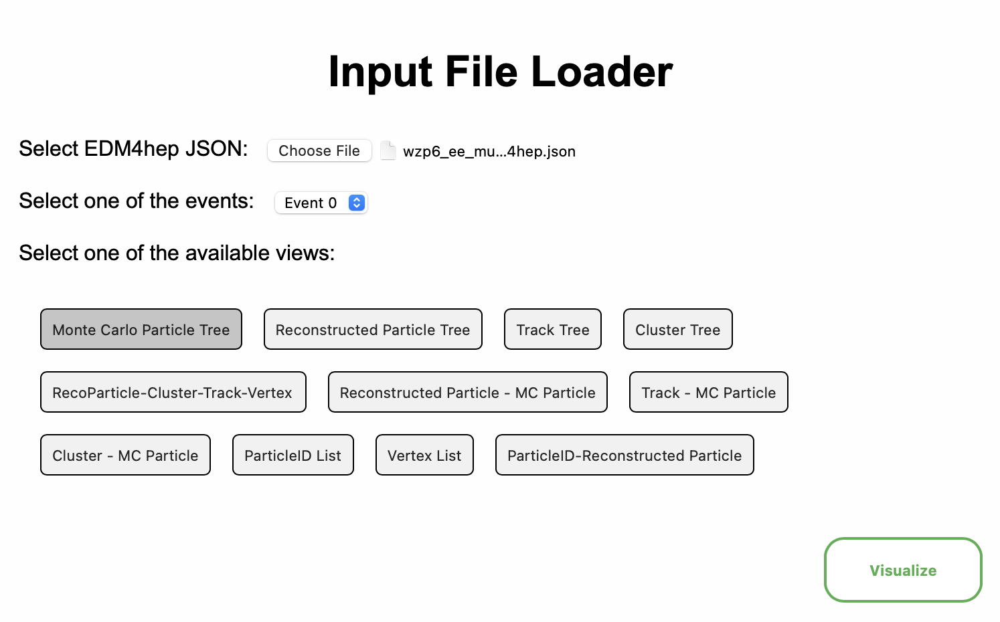
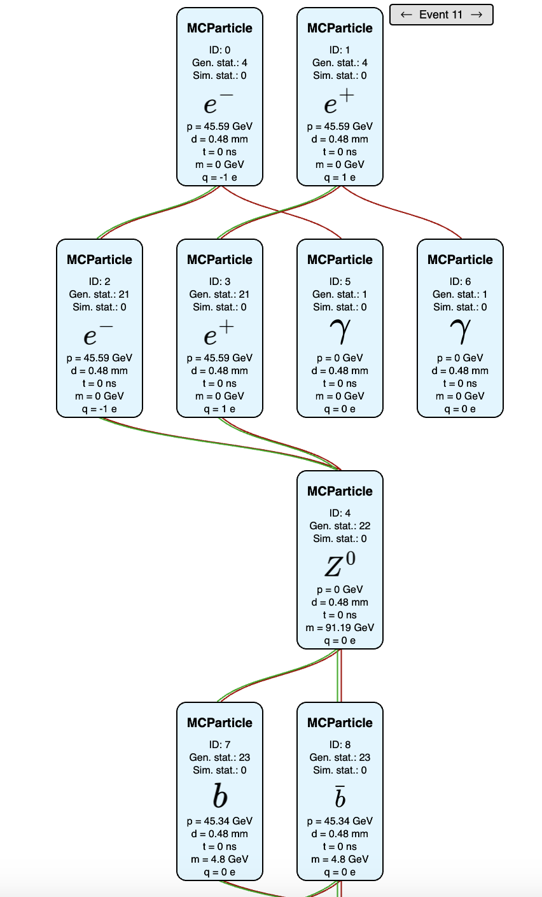

2.3. EDM4hep Event Data Explorer: eedE#
Page contributors
Xunwu Zuo
The EDM4hep event data explorer (eedE) is a tool for visualizing the association between various objects in EDM4hep events. It is lightweight and self-explanatory. This section explains the usage of eedE.
2.3.1. edm4hep2json#
Please note that the edm4hep2json command provided in stack 2022-12-23 does not work. You can open a new SSH connection and source a more recent stack, for example
source /cvmfs/sw.hsf.org/key4hep/setup.sh -r 2024-03-10
eede takes json files as inputs. The edm4hep2json command converts the edm4hep data into a json format.
edm4hep2json my-file.edm4hep.root
You can use the command with the following options
Usage: edm4hep2json [olenfvh] FILEPATH
-o/--out-file output file path
default: "?edm4hep.root" --> ".edm4hep.json"
-l/--coll-list comma separated list of collections to be converted
-e/--events comma separated list of events to be processed
-n/--nevents maximal number of events to be processed
-f/--frame-name input frame name
default: "events"
-v/--verbose be more verbose
-h/--help show this help message
For example, one can call it with
edm4hep2json -l ReconstructedParticles,Particle,MCRecoAssociations -e 2,3,5,7,11 my-file.edm4hep.root
to save only “ReconstructedParticles,Particle,MCRecoAssociations” object collections, and only the 2nd, 3rd, 5th, 7th, and 11th events in the file. An example output can be found at example.edm4hep.json
2.3.2. Using eedE#
Once the data has been converted into a json format via edm4hep2json, one can then head to the website of eedE. After pressing the Start button, one is required to upload the EDM4hep json file via the Browse button. You can then select the type of association (view) to visualize.
{kind=link}

2.3.2.1. Visualizing the MC particle Tree#
Here we take the MC particle tree as an example. In the tree shown in the picture illustrates a collision at 91 GeV, where both the electron and positron emit a ISR photon before they merge into an on-shell Z boson, which decays into a pair of b quarks.
{kind=link}

For each MC particle, values for p, t, m, q represents the momentum in lab frame, time of production, invariant mass, and charge, while d gives the displacement from the origin of lab frame (0,0,0) to the position where the particle is produced.